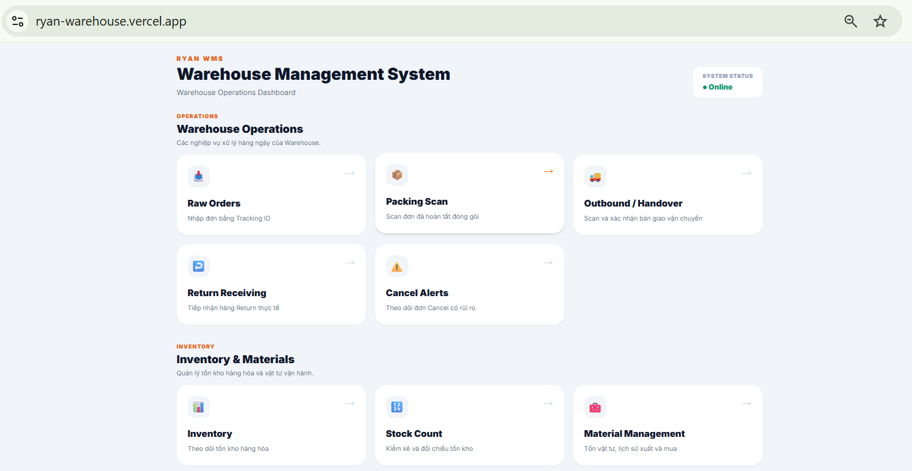
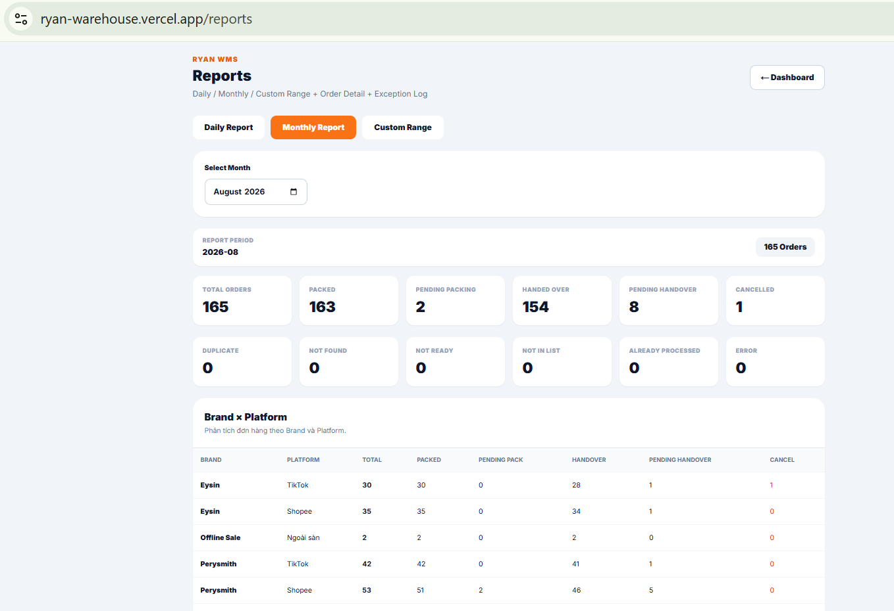
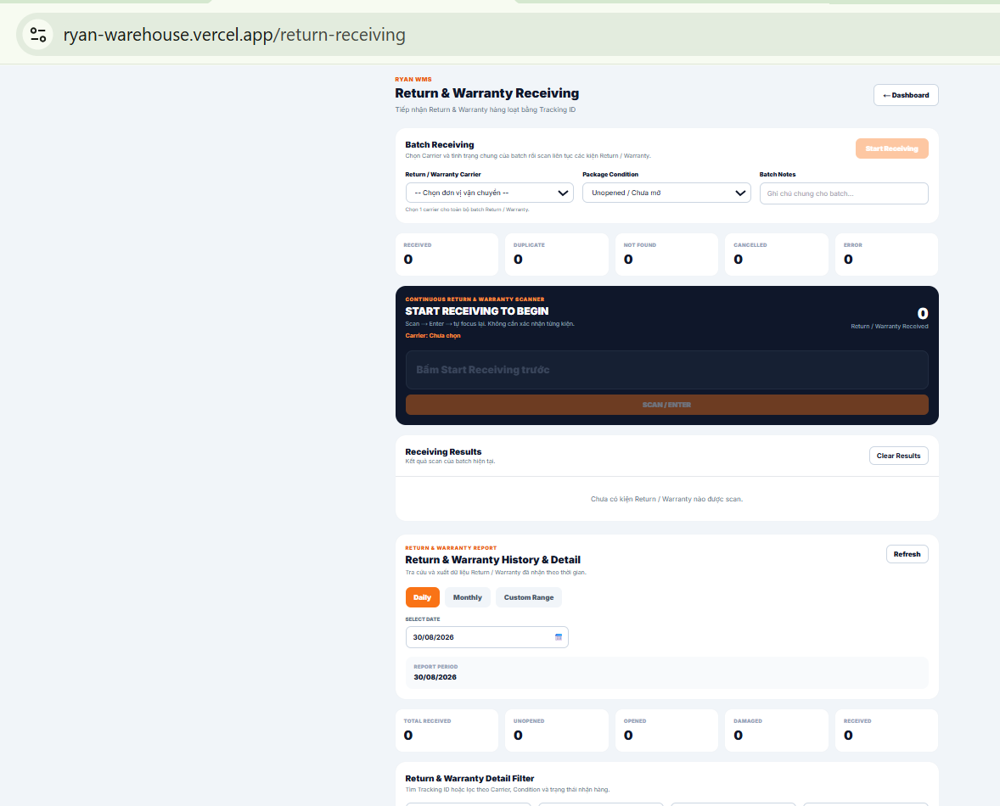
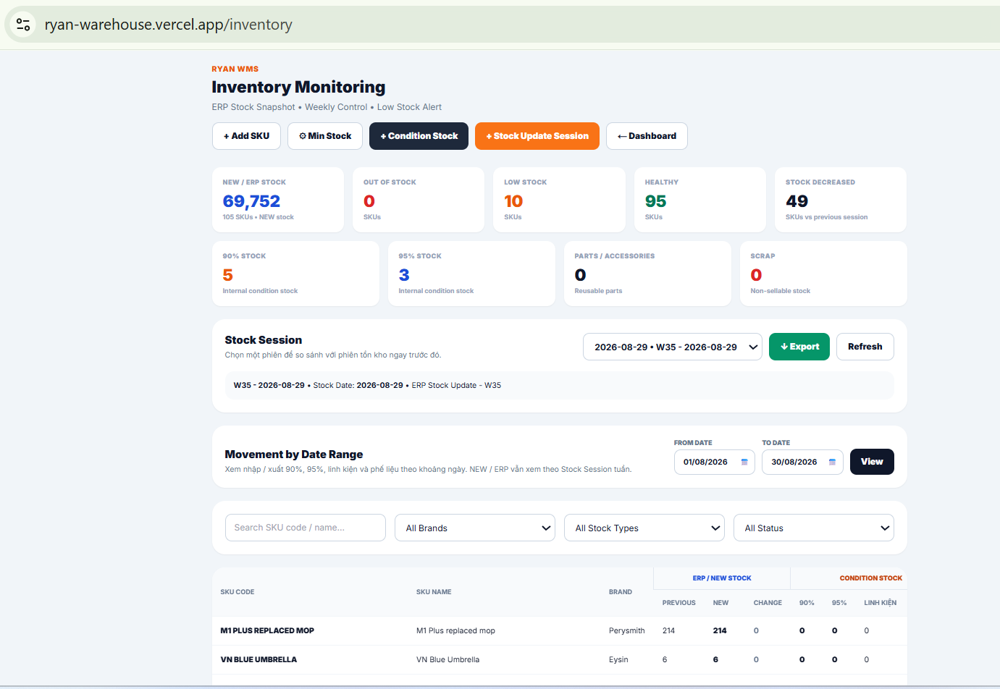
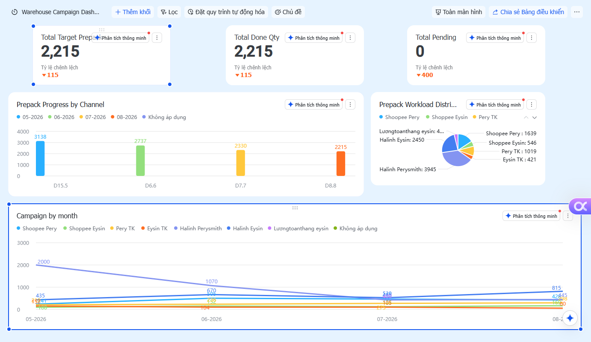
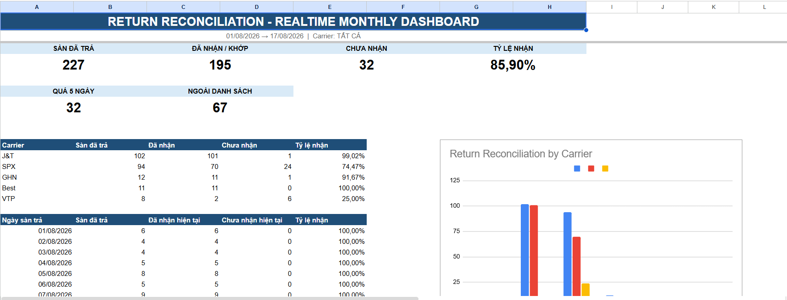
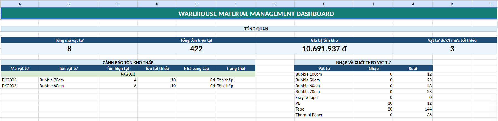
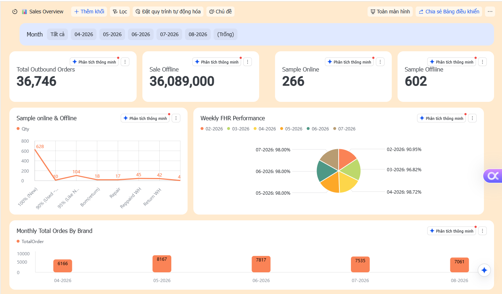
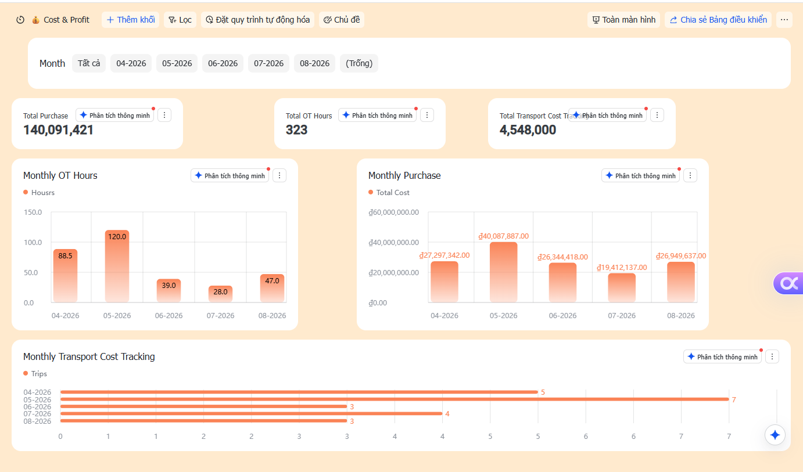
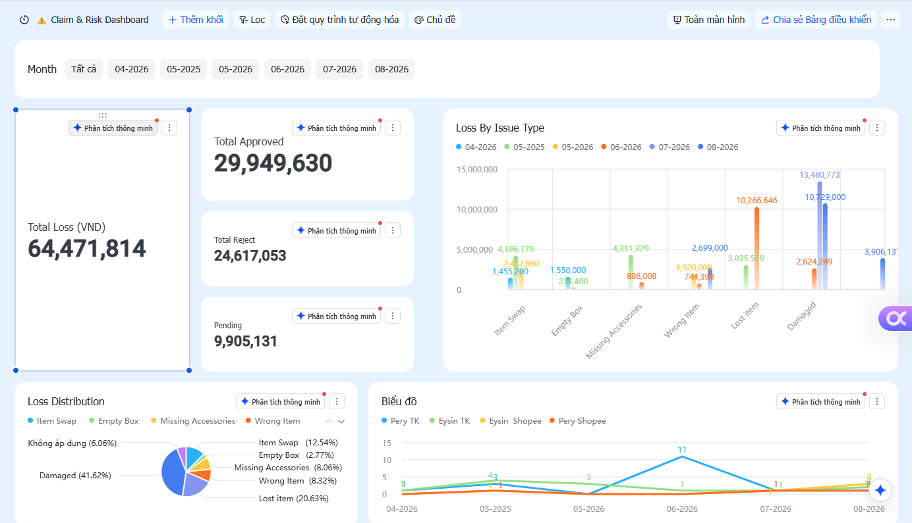

Supported per month
ECOMMERCE OPERATIONS · FULFILLMENT · DIGITALIZATION
Operate today.
Build for tomorrow.
I support reliable eCommerce operations through fulfillment control, inventory management, shipping and returns coordination, operational data, process improvement and workflow automation.
8K–12KOrders / month
99.9%Inventory accuracy
End-to-endFulfillment visibility
TRƯƠNG MINH CHÍ (RYAN)
eCommerce Operations & Fulfillment
Inventory · Shipping · Returns · Logistics
PROFESSIONAL PROFILE
Operations experience built around fulfillment, control and measurable improvement.
eCommerce Operations professional with 4+ years of experience across logistics and operations, with hands-on experience in eCommerce fulfillment, inventory management, shipping and returns.
Experienced in managing Shopee and TikTok Shop fulfillment, coordinating with logistics partners, resolving delivery and return issues, monitoring operational KPIs, analyzing data and improving workflows through automation.
eCommerce OperationsOrder FulfillmentShopee & TikTok Shop
Inventory ManagementShipping & LogisticsReturns / RTO
Operational DataProcess Automation
SELECTED OPERATIONAL IMPACT
Results across fulfillment, inventory and returns.
Reconciliation & stock control
Workflow automation
Reconciliation & carrier control
Stable operating periods
Claims, recovery & reusable inventory
Better visibility. Faster processing. Stronger inventory control. More reliable fulfillment.
ECOMMERCE OPERATING FLOW
From order release to return resolution.
Daily execution supported by tracking, reconciliation, KPI monitoring, exception control and cross-functional coordination.
ORDER RELEASE→PACKING→SHIPPING→
CARRIER HANDOVER→RETURN / RTO→RECONCILIATION
Order processing / packing
Shipping / carrier handover
Peak-sale execution
Stock reconciliation
Return / RTO visibility
Exception & discrepancy control
KPI / reporting / dashboards
Logistics partner follow-up
CS / Operations / Finance / Tech
FLAGSHIP DIGITALIZATION PROJECT
Ryan WMS — eCommerce Operations Control System.
A self-initiated operations control system designed from real eCommerce requirements to connect Order → Fulfillment → Shipping → Carrier Handover → Return / RTO → Reconciliation, with KPI, inventory and exception visibility for daily management.
PROJECT ROLEProcess Owner · System Designer · Builder
Operations-first digitalization project · 2026 — Present
Order processing, packing, carrier handover and fulfillment-performance visibility.
Tracking-level reconciliation, missing-return alerts, claim candidates and audit trails.
Stock movement, inventory health, stock count and discrepancy visibility.
Monthly KPI, FHR, cost, claim recovery and operational trend analysis.

01 · OPERATIONS CONTROL
One control layer for daily eCommerce operations
Centralized visibility across fulfillment, returns, inventory and operational reporting.




PROJECT CAPABILITYProcess Design · eCommerce Operations · Data Control · Workflow Automation
Confidentiality: company and brand identifiers are removed from the public showcase. Selected operational views are presented for portfolio demonstration; detailed business rules and implementation remain private.
SELECTED CASE STUDIES
From operational issue to measurable result.

01
Protecting fulfillment performance during peak sales
Forecast workload and prepack volume, coordinate manpower and carrier handover, and monitor execution through peak-sale periods.
2,215 / 2,215 prepack · 0 pending

02
Return reconciliation & carrier accountability
Built tracking-level reconciliation between platform return records and physical receipts, with carrier follow-up and aging exceptions.
Return leakage: ~50% → near 0%

03
Operational planning & supply continuity
Forecast operating needs, monitor minimum stock and coordinate suppliers to maintain fulfillment continuity during normal and peak periods.
Supply continuity + operating visibility
OPERATIONS CONTROL TOWER
Turning eCommerce data into daily operating decisions.
Selected views connecting fulfillment performance, resource usage, claims and operational risk.



CROSS-FUNCTIONAL COORDINATION
Connecting orders, customers and logistics execution.
Operations + CSOrder issues, returns, warranty and customer experience
Logistics PartnersPickup, handover, delivery exceptions, RTO and claims
FinanceInventory, costs, claims and reconciliation
PurchasingInbound planning and supply availability
Technical TeamReturn and warranty coordination
SuppliersMaterials, availability and operational continuity
PROFESSIONAL RESUME
eCommerce operations experience at a glance.
Fulfillment, inventory, shipping, returns, logistics coordination, data and process improvement.
TRƯƠNG MINH CHÍ (RYAN)
eCommerce Operations · Fulfillment · Inventory & Logistics
ryanopsvn@gmail.comHo Chi Minh City, Vietnam
eCommerce Operations professional with 4+ years of experience across logistics and operations, with hands-on experience in eCommerce fulfillment, inventory management, shipping and returns. Experienced in managing Shopee and TikTok Shop fulfillment, coordinating with logistics partners, resolving delivery and return issues, monitoring operational KPIs and improving workflows through automation.
Warehouse Leader
Kingden Trading Co., Ltd.Manage end-to-end eCommerce fulfillment across Shopee and TikTok Shop, including order processing, packing, shipping, inventory, returns and after-sales workflows.
- Coordinate with logistics partners on shipment delays, failed deliveries, returns, claims and fulfillment exceptions.
- Monitor order status, inventory availability, RTO/returns, fulfillment performance and operational KPIs.
- Manage inventory reconciliation and stock discrepancies, maintaining approximately 99.9% inventory accuracy.
- Work cross-functionally with Operations, Customer Service, Finance, Purchasing and Technical teams.
Regional Operations Supervisor
Giao Hang Tiet Kiem (GHTK)Supervised multi-station logistics operations, monitored delivery KPIs, analyzed operational data, coordinated resources and resolved delivery and service issues.
8K–12KOrders / month
~99.9%Inventory accuracy
~50% → near 0%Return leakage
~5 min → ~1 minProcessing time
Ryan WMS — eCommerce Operations Control System
Self-initiated digitalization project supporting fulfillment, packing, carrier handover, returns, inventory, reconciliation and operational reporting.
View selected project evidence →CAREER JOURNEY
Logistics foundation, expanded into eCommerce operations.
Bachelor of International Business
University of Finance and Business Administration (UFBA)
Regional Operations Supervisor — GHTK
Multi-site logistics operations, delivery KPI monitoring, resource coordination and issue resolution.
Warehouse Leader — Kingden
eCommerce fulfillment, Shopee/TikTok Shop operations, inventory, shipping, returns, logistics coordination, KPI reporting and workflow automation.
ECOMMERCE OPERATIONS
Fulfillment. Inventory. Logistics.
Data. Control. Improvement.
Available to demonstrate selected operational systems and sanitized dashboards during interview.